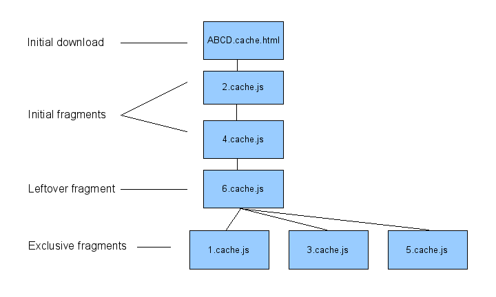

Except as otherwise noted,
the content of this page is licensed under the Creative Commons
Attribution 3.0 License.
Google Code offered in: English - Español - 日本語 - 한국어 - Português - Pусский - 中文(简体) - 中文(繁體)
As an AJAX app develops, the JavaScript part of it tends to grow. Eventually, the code itself is often large enough that merely downloading and installing it adds significant time to the application's startup.
To help with this issue, GWT provides Dead-for-now (DFN) code splitting. This article talks about what DFN code splitting is, how you start using it in an application, and how to improve an application that does use it.
Code splitting is only supported with certain linkers. The default iframe linker is supported, but the cross-site linker is not yet. If you have changed your application to use a non-default linker, check whether that linker supports code splitting.
To split your code, simply insert calls to the method GWT.runAsync at the places where you want the program to be able to pause for downloading more code. These locations are called split points.
A call to GWT.runAsync is just like a call to register any other event handler. The only difference is that the event being handled is somewhat unusual. Instead of being a mouse-click event or key-press event, the event is that the necessary code has downloaded for execution to proceed.
For example, here is the initial, unsplit Hello sample that comes with GWT:
public class Hello implements EntryPoint {
public void onModuleLoad() {
Button b = new Button("Click me", new ClickHandler() {
public void onClick(ClickEvent event) {
Window.alert("Hello, AJAX");
}
});
RootPanel.get().add(b);
}
}
Suppose you wanted to split out the Window.alert call into a separate code download. The following code accomplishes this:
public class Hello implements EntryPoint {
public void onModuleLoad() {
Button b = new Button("Click me", new ClickHandler() {
public void onClick(ClickEvent event) {
GWT.runAsync(new RunAsyncCallback() {
public void onFailure(Throwable caught) {
Window.alert("Code download failed");
}
public void onSuccess() {
Window.alert("Hello, AJAX");
}
});
}
});
RootPanel.get().add(b);
}
}
In the place the code used to call Window.alert, there is now a call to GWT.runAsync. The argument to GWT.runAsync is a callback object that will be invoked once the necessary code downloads. Like with event handlers for GUI events, a runAsync callback is frequently an anonymous inner class.
That class must implement RunAsyncCallback, an interface declaring two methods. The first method is onFailure, which is called if any code fails to download. The second method is onSuccess, which is called when the code successfully arrives. In this case, the onSuccess method includes the call to Window.alert.
With this modified version, the code initially downloaded does not
include the string "Hello, AJAX" nor any code necessary
to implement Window.alert. Once the button is clicked, the
call to GWT.runAsync will be reached, and that code will
start downloading. Assuming it downloads successfully,
the onSuccess method will be called; since the necessary code
has downloaded, that call will succeed. If there is a failure to
download the code, then onFailure will be invoked.
To see the difference in compilation, try compiling both versions
and inspecting the output. The first version will
generate cache.html files that all include the
string "Hello, AJAX". Thus, when the app starts up, this
string will be downloaded immediately. The second version, however,
will not include this string in the cache.html
files. Instead, this string will be located in cache.js files
underneath the deferredjs directory. In the second version,
the string is not loaded until the call to runAsync is
reached.
This one string is not a big deal for code size. In fact, the overhead of the runAsync run-time support could overwhelm the savings. However, you aren't limited to splitting out individual string literals. You can put arbitrary code behind a runAsync split point, potentially leading to very large improvements in your application's initial download size.
You've now seen the basic code-splitting mechanism that GWT provides. When you first try to split your own code, you might not split out as much as you hoped. You will try to split out some major subsystem, but there will be a stray reference to that subsystem somewhere reachable without going through a split point. That reference can be enough to pull much of the subsystem into the initial download.
Because of this challenge, effective code splitting requires iteration. You have to try one way, look at how it worked, then make modifications to get it working better. This section describes several tools that GWT provides for iterating toward better code splitting.

Figure 1: Fragments produced by code splitting
Before going further, it is important to understand exactly what fragments the code splitter divides your code into. That way you can examine how the splitting went and work towards improving it. Figure 1 gives a diagram of those fragments and the order they can load in.
One very important fragment is the initial download. For the iframe linker, it is emitted as a file whose name ends with cache.html. When the application starts up, the initial-download fragment is loaded. This fragment includes all the code necessary to run the application up, but not past, any split point. When you start improving your code splitting, you should probably start by trying to reduce the size of the initial download fragment. Reducing this fragment causes the application to start up quickly.
There are a number of other code fragments generated in addition to this initial one. For the iframe linker, they are located underneath a directory named deferredjs, and their filenames all end with cache.js. Each split point in the program will have an associated code fragment. In addition, there is a leftovers code fragment for code that is not associated with any specific split point. In Figure 1, the leftovers fragment is number 6.
The code fragment associated with a split point is of one of two kinds. Most frequently, it is an exclusive fragment. An exclusive fragment contains code that is needed only once that split point is activated. In Figure 1, split points 1, 3, and 5 each have an exclusive fragment. Less frequently, a split point gets an initial fragment. That happens if a split point is part of the initial load sequence, described below. In Figure 1, the initial load sequence is split point 2 followed by split point 4.
Unlike an exclusive fragment, an initial fragment does not rely on anything in the leftovers fragment, so it can load before the leftovers do. However, an initial fragment can be loaded only in its designated position in the initial load sequence; exclusive fragments have the benefit that they can be loaded in any order.
Now that you know how GWT splits up code in general, you will want to know how it splits up your code in particular. There are several tools for this, and they are all included in a Compile Report.
To obtain a compile report for your application, simply compile your application with the -compileReport option added. Your application should then have an output directory named compileReport. Open index.html in that directory to view a Compile Report for your application.
The first thing to look at in a compile report is the overall size breakdown of your application. Compile reports break down your application size in four different ways: by Java package, by code type, by type of literals (for code associated with literals), and by type of strings (for code associated with string literals).
By looking at these overall sizes, you can learn what parts of the code are worth paying more attention to when splitting. For that matter, you might well see something that is larger than it should be; in that case, you might be able to work on that part and shrink the total, pre-split size of the application.
Since you are working on code splitting, you will next want to look at the way the application splits up. Click on any code subset to see a size breakdown of the code in that fragment. The total program option describes all of the code in the program. The other options all correspond to individual code fragments.
At some point you will try to get something moved out of the initial download fragment, but the GWT compiler will put it there anyway. Sometimes you can quickly figure out why, but other times it will not be obvious at all. The way to find out is to look through the dependencies that are reported in the compile report.
The most common example is that you expected something to be left out of the initial download, but it was not. To find out why, browse to that item via the initial download code subset. Once you click on the item, you can look at a chain of dependencies leading back to the application's main entry point. This is the chain of dependencies that causes GWT to think the item must be in the initial download. Try to rearrange the code to break one of the links in that chain.
A less common example is that you expected an item to be exclusive to some split point, but actually it's only included in leftover fragments. In this case, browse to the item via the total program code subset. You will then get a page describing where the code of that item ended up. If the item is not exclusive to any split point, then you will be shown a list of all split points. If you click on any of them, you will be shown a dependency chain for the item that does not include the split point you selected. To get the item exclusive to some split point, choose a split point, click on it, and then break a link in the dependency chain that comes up.
By default, every split point is given an exclusive fragment rather than an initial fragment. This gives your application maximum flexibility in the order the split points are reached. However, it means that the first split point reached must pay a significant delay, because it must wait for the leftovers fragment to load before its own code can load.
If you know which split point in your app will come first, you can improve the app's performance by specifying an initial load sequence. To do so, you need to name your runAsync calls and then specify a list of those names in your module file.
To give a name to a runAsync call, add a class literal as the first argument to the call to runAsync, like this:
GWT.runAsync(SomeClass.class, new RunAsyncCallback() {
// ... callback class's body ...
}
This first argument must be a class literal, and it is ignored except to be used as a name for the call. Any class literal can be used. A common choice is to use the enclosing class that the call appears in.
Once you have named your calls, you can specify an initial load sequence with lines like the following:
<extend-configuration-property name="compiler.splitpoint.initial.sequence"
value="com.yourcompany.yourprogram.SomeClass"/>
The value part of the line specifies a split point. It is interpreted as a fully qualified class name that must match a literal used in exactly one runAsync call.
For some applications, you will know not only the first split point reached, but also the second and maybe even the third. You can continue extending the initial load sequence by adding more lines to the configuration property. For example, here is module code to specify an initial load sequence of three split points.
<extend-configuration-property name="compiler.splitpoint.initial.sequence"
value="com.yourcompany.yourprogram.SomeClass"/>
<extend-configuration-property name="compiler.splitpoint.initial.sequence"
value="com.yourcompany.yourprogram.AnotherClassClass"/>
<extend-configuration-property name="compiler.splitpoint.initial.sequence"
value="com.yourcompany.yourprogram.YetAnotherClass"/>
The down side to specifying an initial load sequence is that if the split points are reached in a different order than specified, then there will be an even bigger delay than before before that code is run. For example, if the third split point in the initial sequence is actually reached first, then the code for that split point will not load until the code for the first two split points finishes loading. Worse, if some non-initial split point is actually reached first, then all of the code for the entire initial load sequence, in addition to the leftovers fragment, must load before the requested split point's code can load. Thus, think very carefully before putting anything in the initial load sequence if the split points might be reached in a different order at run time.
GWT's code splitting is new, so the best idioms and patterns for using it are still in their infancy. Even so, here are a couple of coding patterns that look promising. Keep them in mind for your coding toolbox.
Frequently you will think of some part of your code as its own coherent module of functionality, and you'd like for that functionality to get associated with a GWT exclusive fragment. That way, its code will not be downloaded until the first time it is needed, but once that download happens, the entire module will be available.
A coding pattern that helps with this goal is to associate a class with the module and then to make sure that all code in the module is reachable only by calling instance methods on that class. Then, you can arrange for the only instantiation of that class in the program to be within a runAsync.
The overall pattern looks as follows.
public class Module {
// public APIs
public doSomething() { /* ... */ }
public somethingElse() { /* ... */ }
// the module instance; instantiate it behind a runAsync
private static Module instance = null;
// A callback for using the module instance once it's loaded
public interface ModuleClient {
void onSuccess(Module instance);
vaid onUnavailable();
}
/**
* Access the module's instance. The callback
* runs asynchronously, once the necessary
* code has downloaded.
*/
public static void createAsync(final ModuleClient client) {
GWT.runAsync(new RunAsyncCallback() {
public void onFailure(Throwable err) {
client.onUnavailable();
}
public void onSuccess() {
if (instance == null) {
instance = new Module();
}
client.onSuccess(instance);
}
});
}
}
Whenever you access the module from code that possibly loads before the module, go through the static Module.createAsync method. This method is then an async provider: it provides an instance of Module, but it might take its time doing so.
Usage note: for any code that definitely loads after the module, store the instance of the module somewhere for convenience. Then, access can go directly through that instance without harming the code splitting.
The code splitter of GWT does not have any special support for prefetching. Except for leftovers fragments, code downloads at the moment it is first requested. Even so, you can arrange your own application to explicitly prefetch code at places you choose. If you know a time in your application that there is likely to be little network activity, you might want to arrange to prefetch code. That way, once the code is needed for real, it will be available.
The way to force prefetching is simply to call a runAsync in a way that its callback doesn't actually do anything. When the application later calls that runAsync for real, its code will be available. The precise way to invoke a runAsync to have it do nothing will depend on the specific case. That said, a common general technique is to extend the meaning of any method parameter that is already in scope around the call to runAsync. If that argument is null, then the runAsync callback exits early, doing nothing.
For example, suppose you are implementing an online address book. You might have a split point just before showing information about that contact. A prefetchable way to wrap that code would be as follows:
public void showContact(final String contactId) {
GWT.runAsync(new RunAsyncCallback() {
public void onFailure(Throwable caught) {
cb.onFailure(caught);
}
public void onSuccess() {
if (contactId == null) {
// do nothing: just a prefetch
return;
}
// Show contact contactId...
}
});
}
Here, if showContact is called with an actual contact ID,
then the callback displays the information about that contact. If,
however, it is called with null, then the same code will
be downloaded, but the callback won't actually do anything.